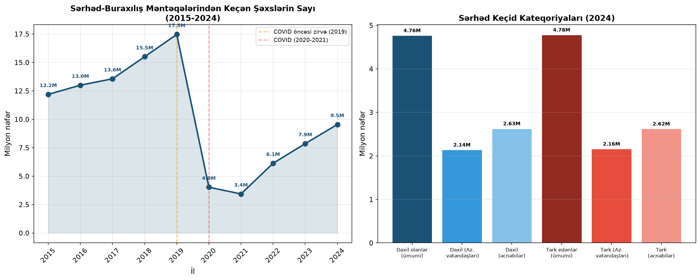
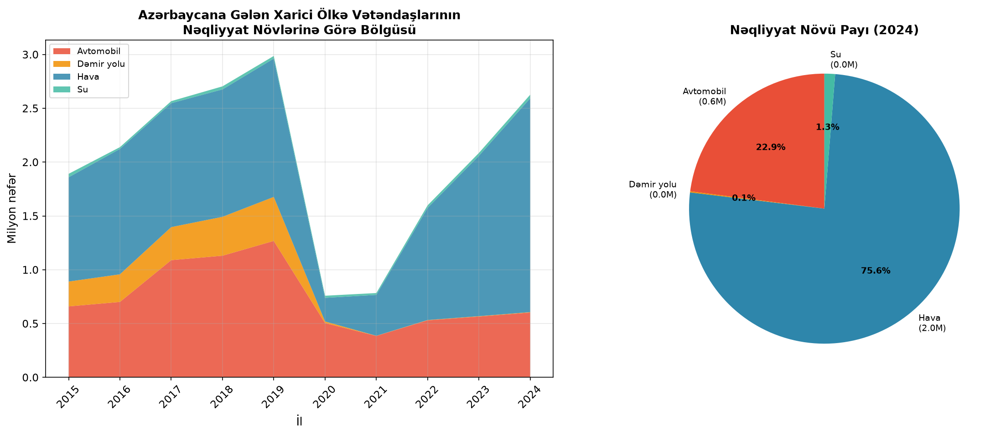
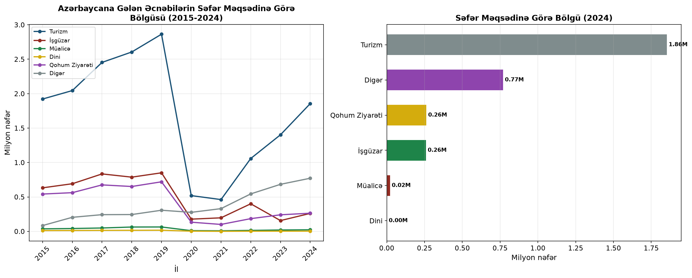
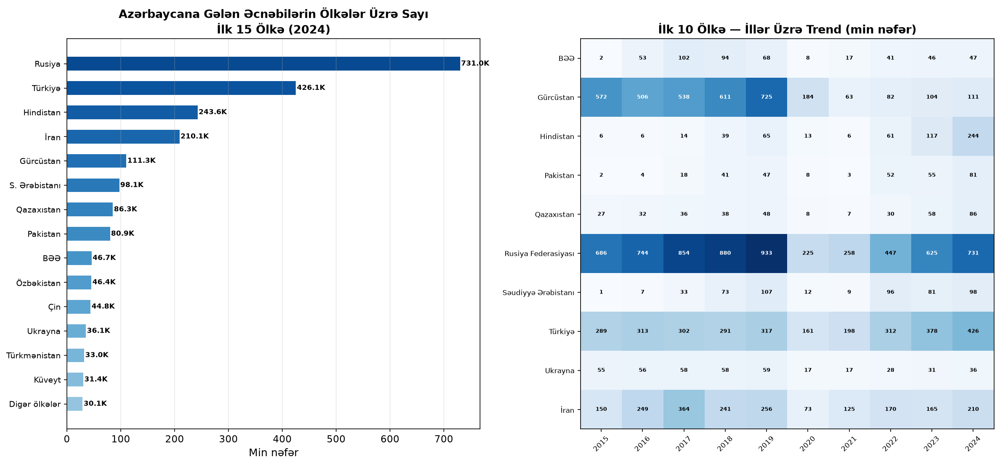
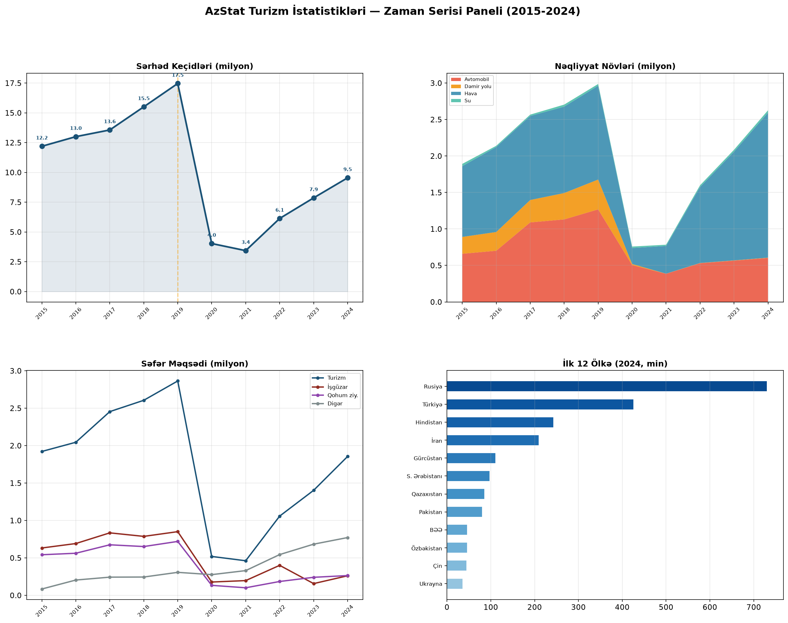

📊 AzStat Turizm İstatistikleri — Zaman Serisi Analizi
Azərbaycan Respublikasının Dövlət Statistika Komitəsi (AzStat) məlumatları əsasında turizm göstəricilərinin zaman serisi analizi (2015-2024). Məlumatlar birbaşa AzStat rəsmi XLS fayllarından çıxarılmışdır.
🔑 Əsas Trendlər
- COVID-19 pandemiyası səbəbindən 2020-ci ildə sərhəd keçidləri 76.9% azalaraq 4.03 milyon nəfərə düşüb (2019: 17.46 milyon nəfər).
- 2024-cü ildə toparlanma davam edir: 9.54 milyon nəfər keçid qeydə alınıb — 2019 səviyyəsinin 54.6%-i.
- Hava nəqliyyatı gələn əcnəbilər arasında ~75% payla əsas nəqliyyat növüdür. Rusiya Federasiyası (27.8% pay) ən böyük mənbə ölkə olaraq qalır.
Məlumat mənbəyi: AzStat — Turizm statistikası
🛂 Sərhəd-Buraxılış Məntəqələrindən Keçən Şəxslərin Sayı
Azərbaycanın dövlət sərhəd-buraxılış məntəqələrindən keçən şəxslərin ümumi sayı, daxil olanlar və tərk edənlər üzrə bölgüsü (2015-2024). Məlumatlar 002_1.xls faylından çıxarılmışdır.

| İl | Ümumi Keçid | Daxil Olanlar | Tərk Edənlər | Az. Vətəndaşları (daxil) | Əcnəbilər (daxil) |
|---|
✈️ Ölkəyə Gələn və Gedən Vətəndaşların Nəqliyyat Növlərindən İstifadəsi
Azərbaycana gələn xarici ölkə vətəndaşlarının nəqliyyat növləri üzrə bölgüsü: avtomobil, dəmir yolu, hava nəqliyyatı və su nəqliyyatı. Məlumatlar 002_2.xls faylından çıxarılmışdır.

| İl | Avtomobil | Dəmir Yolu | Hava | Su | Cəmi (gələn) |
|---|
🎯 Səfər Məqsədi Üzrə Bölgü və Xərclər
Azərbaycana gələn əcnəbilərin səfər məqsədləri üzrə bölgüsü — turizm, işgüzar, qohum ziyarəti, müalicə, dini turizm və digər. Məlumatlar 002_3.xls faylından çıxarılmışdır.

| İl | Turizm | İşgüzar | Qohum Ziy. | Müalicə | Dini | Digər | Cəmi |
|---|
🌍 Azərbaycana Gələn Əcnəbilərin Ölkələr Üzrə Bölgüsü
Azərbaycana gələn əcnəbilərin vətəndaşlıqlarına görə bölgüsü — ən böyük mənbə ölkələr və illər üzrə trend. Məlumatlar 002_4.xls faylından çıxarılmışdır.

| # | Ölkə | 2024 | 2023 | 2022 | 2019 | Pay (2024) | Dəyişim (24/23) |
|---|
📊 Ümumi Panel — AzStat Turizm İstatistikləri
Dörd əsas göstəricinin vahid paneldə icmalı: sərhəd keçidləri, nəqliyyat növləri, səfər məqsədləri və ölkə bölgüsü.
